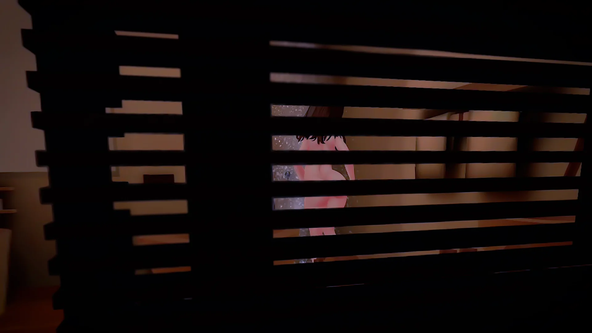

該当する項目が見つかりませんでした。
起動・インストール関連
PCSteamVRで起動できない
- SteamVRウィンドウの「三本線」メニュー →「設定」を選択
- OpenXRの項目で「STEAMVRをOPENXRランタイムとして設定」を選択
PCMeta Horizon Link（旧 Quest Link）のSteamVRで起動できない
PCのMeta Horizon Linkソフト（旧 Meta Quest Link）で、OpenXRの設定をご変更ください。
- 設定→一般→OpenXRランタイム
- アクティブに設定
QuestAPKファイルが導入できない
Quest2でSideQuestによる導入ができない現象を確認しています。
導入ガイドの「B. Quest本体のファイルアプリ」をお試しください。
操作・ゲームプレイ関連
髪型が着せ替えられない
衣装と髪型で操作方法が若干異なります。
- 衣装の場合 リュックから取り出して掴むだけで着せ替えができます。
- 髪型の場合 リュックから取り出した後、彼女の髪に当てる必要があります。
下着が脱がせられない
パンツとブラジャーはグリップボタンで掴むことができます。
扉やアイテムの操作が難しい
- 手には物理判定があるので、扉に手をあててそのままスライドすると操作しやすいです。
- グリップボタンは使わず、手で直接押すとうまくいきやすい場合があります。
手つなぎがうまくいかない
手から肘の間（前腕部分）を掴むようにしてください。
MRモードでお手て繋ぎができない
メニューのポーズリセット後に1回のみ可能です。仕様上の制約となっています。
MRモードの使い方が分からない
Quest3/3Sで空間認識機能が使えない
Quest3、Quest3S限定の機能となります。MRの設定方法に記載の初期設定を行ったうえで、次を確認してください。
- スペースの設定内に、「スペースを管理」と「ルーム名」の項目が表示されていること
- スペースの設定にある「アプリのアクセス許可」→「空間データ」→「MRsecretVR」がONであること
- スペースの設定中に、部屋の形状を認識するMeshが表示されていること
- メニューの「空間認識未対応」の箇所を押してONにしていること